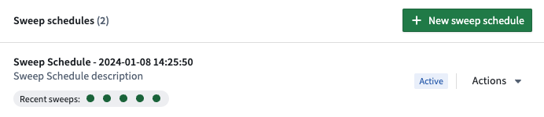
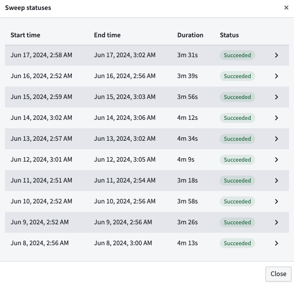

A Linter sweep schedule is a Linter configuration that defines the following:
Sweep schedules must belong to a space, and rules are run against Foundry resources in Projects that belong to that space. You can view, edit, or create a new Linter configuration from the Linter Configuration tab under enrollment settings in Control Panel. From here you can configure sweep schedules. These schedules will only work on the space specified in the bar at the top left of the page.
The Linter configuration page lists existing sweep schedules for your specified space. Here, you can see the status of recent sweeps and create new sweep schedules. Each schedule can be edited, paused, triggered, or deleted from the Actions dropdown.

You can also see a detailed status of the 10 most recent sweeps by selecting Recent sweeps.

You can edit schedule metadata such as the name and description and also change the rule scope in the Edit sweep schedule page.
Rule scopes allow users to define the rules that will be used by a sweep schedule. There are three ways to define the rule scope:
PIPELINE_COST_RULES preset would add all cost related rules.The order of operations follows the order listed above: first, the rule presets are applied, then individual rules are added, and then excluded rules are removed from the rule scope.
The resource scope defines which Projects are within the scope of the sweep schedule. By default, all Projects in the current space are in scope for the sweep. Users can also reduce the scope to include only selected Projects.